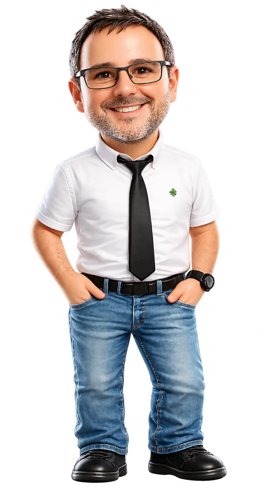

Una aventura para mentes curiosasEl campo guarda secretos.
El campo guarda secretos.
Vamos a descubrirlos.
Forma equipo con David. Explora, recoge pistas y decide qué es verdadero y qué es falso para convertirte en investigador.
6 misiones24 descubrimientosSin prisas
SENSORESCULTIVOSDATOS

Tu compañero de investigación
Tu misión
Consigue las seis insignias de la expedición. Cada zona tiene un reto para explorar y cuatro preguntas para resolver. Equivocarte también sirve para aprender.
Tu base de exploración
Elige tu próxima misión.
Cada laboratorio descubre una parte del trabajo de David.
CAMPO EXPERIMENTAL · 6 ZONAS POR EXPLORAR
XP conseguidos
Respuestas correctas
Tu cuaderno científico
Pequeñas pistas. Grandes descubrimientos.
La ciencia detrás de la aventura
Las preguntas se han preparado a partir de las líneas de investigación y publicaciones de la web de David. Los retos visuales son ejemplos educativos con datos simulados.